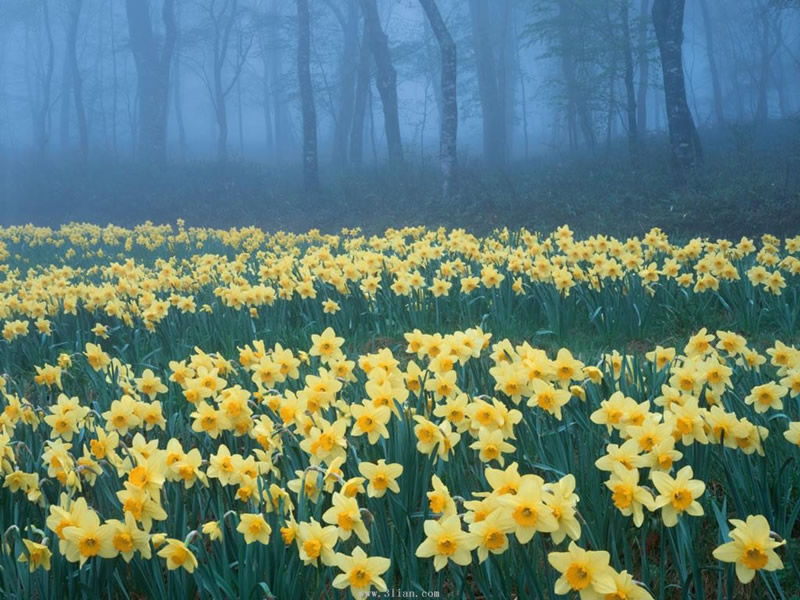
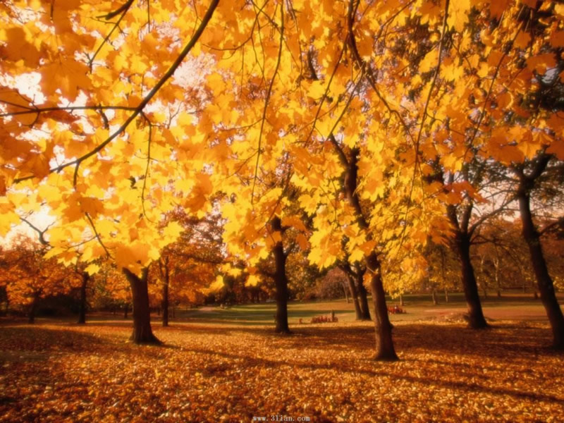
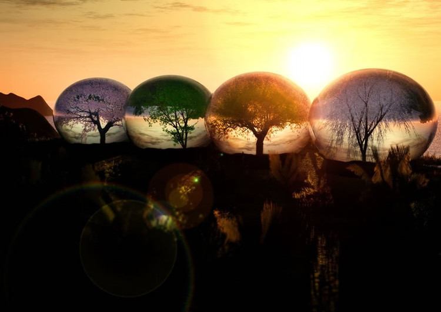

生命中的四季
生命中走过的那些年，有冬雪的纯洁，秋叶的静美，夏花的绚丽，春草的执着......
冬雪
一支笔，一个人，一个季节的回顾。
习惯了含雪的季节，习惯了冰冷了温度，习惯了一个人站在窗前寂静的看着远方，窗外的雪好厚呀，覆盖着大地上的所有植被，在阳光的照射下，散发着晶莹剔透的光芒，好美。已经好久都没有感受这种优雅娴静的时光了，看着雪花飞舞在这个城市中，如同美丽的燕尾蝶，在空中划过它最优雅的一生，装点着这座城市的秀丽和庄严。我很喜欢雪花，冰清玉洁的魂魄无声的飘落在尘世的每一个角落，飘落于我的手掌心，瞬间就变成了一滴泪，一滴天使的眼泪。
秋叶
一个梦，一个人，一场秋天的童话。
秋天是个浪漫的季节，既有成熟的风韵，又有洒脱的禅意， 一场雨过，山朦胧，水朦胧，楼朦胧，这样的情致，浇灌出一颗玲珑的心，飒飒秋风吹过，凉意淡淡袭来，在秋天里最美的景不是赏花，而是看落叶的静美，那是如此的曼妙，落叶在风中翩翩起舞，做出最美的告别，有着饱经风霜后的从容与淡定，有着历经沧桑后的彻悟与解脱，有谁能说这不是一种涅槃，是一种重生呢，秋天，是个适合怀念的季节，怀念那一次邂逅，那一次害羞，那已经散落在天涯的心底的那份思念，于是，我想到那句话，你是我不该翻阅的那一本书，可是我还是不小心翻阅了，于是你就住在了我的心里面，再也忘不掉了。
夏花
一盏灯，一个人，一路繁花的相伴。
生如夏花之灿烂，无疑，夏天是绚丽多彩的，是轻快明朗的，迎着一缕夏风，随着云彩投下的姿影，繁花用最绚丽的色彩，散发了一季的芬芳。那些盛开的花朵，为大地绘上五颜六色的色彩，一株株、一朵朵,或半含微露，或肆意开放，用它们独有热情，写出夏天的味道。夏虫带着自己特有的乐器，编揍了一曲又一曲的经典曲段。夏天的阳光是最暖的，似乎所有的寒冷和伤感在它炽热的温度下，都慢慢的抚平了。
春草
一首歌，一个人，一个希望的坚守。
春天是新的希望的开始，当冬雪渐渐的融化，当田野渐渐的披上绿色，当墙角的树长出嫩嫩的芽，那就是春之使者到来了，春天似乎褪去了冬日的寒凉与忧愁，也没有夏天的热情似火，它用它特有的温情，使灰的世界迎来春的生机盎然与跳跃而准备着持久着的生命。梦想，是春天里一道闪亮的光彩，那些阳光里闪闪发光的叶子，是我们执着追求的闪光的梦。去每一座和自己有缘的城市，看每一道划过自己生命的靓丽风景，在有限的生命里用尽所有力量发出属于自己的那道最独特璀璨的光芒。我想，我是有梦想的，如果人生是一个故事，我希望自己创造的那个故事是最精彩的，我希望自己可以用文字记录下来每一段难忘的画面，可以感动很多很多人。
- 
- 
- 